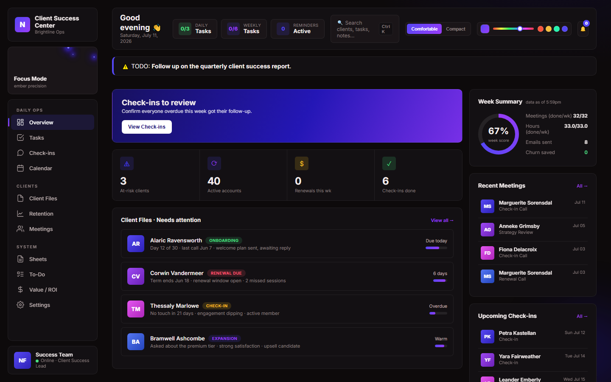
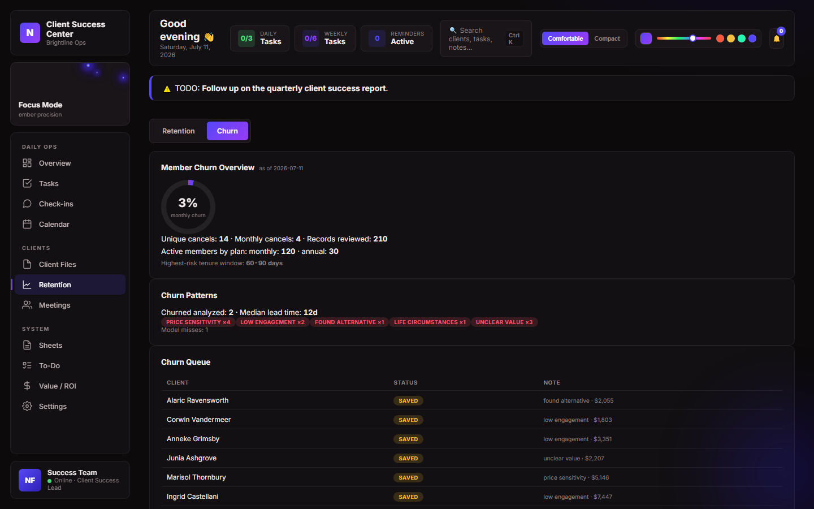
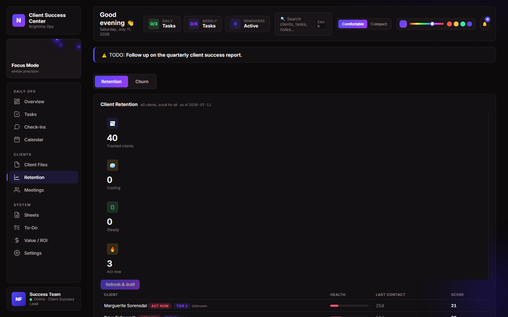
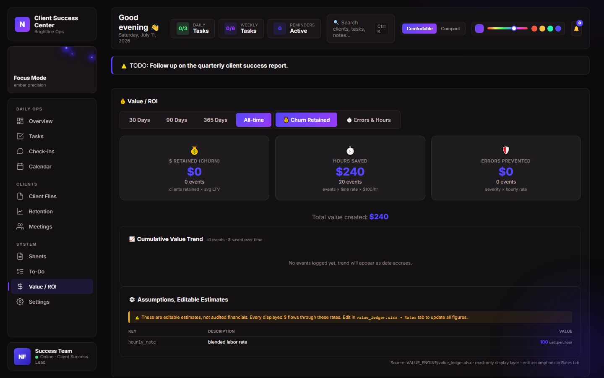

A command center that replaced five spreadsheets with one screen
How a customer-success team went from "who's at risk?" being a Slack question to an answer that updates itself every morning.
The problem
The customer-success team was running on scattered spreadsheets: one for renewals, one for onboarding status, one for at-risk flags kept in someone's head and a Slack channel. Nobody had a single place to see who needed attention today, and there was no reliable way to answer a simple question a leadership team asks constantly: is the customer-success function actually working, in dollars?
Manual tracking also meant the team's own effort was invisible. Follow-ups happened, calls got made, and none of it rolled up into a number anyone could point to.
What was built
A single web dashboard that pulls customer health data, at-risk flags, renewal dates, task assignments, and meeting history into one live view. The team opens one tab in the morning instead of five spreadsheets and a Slack search.

The overview screen: today's flagged accounts, workload by team member, and pipeline health at a glance.
Key pieces of the system:
- An at-risk flagging workflow that surfaces accounts needing attention before they churn, not after.
- A renewal and retention view that tracks every account through to a resolved outcome.
- Task and meeting logs tied directly to each customer record, so history isn't scattered across tools.
- An operator task board that runs the team's daily and weekly routines with one click, keeps the primary action obvious by placing secondary and legacy options behind a toggle, and moves wound-down workflows into a separate retired section so the active list stays focused.
- An internal value/ROI ledger that credits the team with the revenue its work actually retains.

The at-risk view: every flagged account tracked through to an outcome.

Retention tracking: renewals and save attempts in one queue.
Outcomes

The value/ROI ledger: retained revenue credited directly to the workflow that saved it.
Retention value engine
Illustrative data for Brightline Ops, a fictional company, shown to demonstrate how the value engine reads a weekly churn trend before and after the workflow goes live.
Methodology: the baseline churn rate is the trailing average measured before the workflow went live. Each week after launch, the engine computes a counterfactual expected churn count from that baseline and compares it to what actually happened, crediting the difference only down to a conservative floor band so a quiet week never overstates the save. The chart and stats above use illustrative numbers scaled from the same method the real engine runs, not figures from any specific customer.
Tech approach
Built with Python on the backend and a lightweight web dashboard on the front end, with a spreadsheet-backed data model so the team could keep using familiar tools underneath a much better interface. Data updates flow in on a schedule rather than requiring anyone to manually refresh a report. The value/ROI layer uses event sourcing, every credited dollar traces back to a specific tracked outcome, not an estimate.
The goal throughout was to build something the team would actually open every morning, not a reporting tool that gets checked once a quarter.